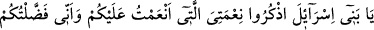
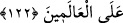
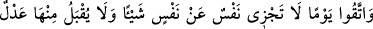
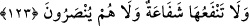

zarara uğrayanlar onlardır.
“Kendilerine kitap verdiğimiz kimseler,” ibâresiyle Abdullah b. Selâm ve
arkadaşları gibi ehl-i kitabtan îmân edenler kastedilmektedir. Âyette bunların özellikle
zikredilmesi bu sayılanların kitabla amel etmelerindendir. Kitap ise Tevrât’tır.
“Tilâvet hakkını tam gözeterek okurlar.” Tahrif etmeksizin lâfzına uyarak mânâlarını
düşünerek ve içindekilerle amel ederek.
“İşte onlar” kitap verilmekle ve onu okumakla tavsîf olunanlar; tahrîf etmeksizin
kendi kitablarına inanan kimselerdir. Kim de o kitaba ister tahrif yoluyla olsun ister
başka bir yolla küfrederse, onlar da îmâna mukabil inkârı satın almış, aldanmış ve
helâke uğramış kimselerdir.
122. Ey İsrâîloğulları! Size verdiğim nimetimi ve sizi (bir zamanlar) cümle âleme
üstün kılmış olduğumu hatırlayın.
Tevrât da Allah’ın İsrâîloğulları’na ihsan ettiği nimetlerdendir. Nimetin hatırlanması,
nimete şükretmekle olur. Bu nimete zamanla şükür ise Tevrât’ta zikrolunan herşeye îmân
etmeleridir. Hz. Peygamber’in sıfatı da Tevrât’ta zikrolunduğu için ona da îmân etmeleri
gerekmektedir. Allah’ın “hatırlayın” emrini tam ve gerçek anlamıyla yerine
getirebilsinler.
123. Ve bir günden sakının ki, o günde hiç kimse başkası nâmına bir şey
ödeyemez, kimseden fidye kabûl edilmez, hiç kimseye şefâat fayda vermez. Onlar
hiçbir yardım da görmezler.
“O günden...” O kıyâmet gününün azâbından sakının ki, o gün hiçbir nefis bir
başkasının borcundan veya günahından dolayı sorumlu tutulmaz. Herkes yaptığının
karşılığını bulur. Ancak üzerinde başkasının hakkı bulunan kişi hâriç. Böyleleri
üzerindeki bu hakkı ödemediği; helâlleşmediği sürece ondan sorumludur ve cezâsını da
çekecektir. Bu sebeble Hz. Peygamber, “Her kimin üzerinde kardeşi –dünyâ malı veya
başka bir şeyden dolayı– hakkı varsa dinar veya dirhemin fayda vermeyeceği o gün
(kıyâmet) gelmeden gidip helâllik dilesin. Aksi takdirde kıyâmet günü, eğer sâlih
ameli varsa –kardeşine yaptığı haksızlık miktarınca– alınır ve kardeşine verilir; sâlih
ameli yeterli gelmezse, kardeşinin günahlarından alınır, kendisine yüklenir.”[373]
“Kimseden bedel kabûl olunmaz.” O kıyâmet günü hiçbir nefisten kendisini azâbtan